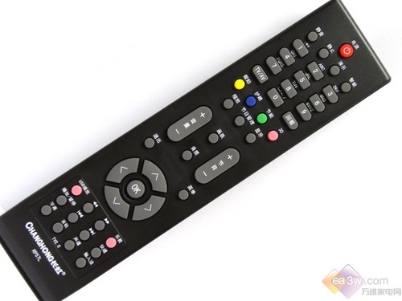

一、概述
多媒体图书是一款用HTML5语言编写的，最后由node-webkit生成的PC端软件，本软件主要功能有，炫彩书架、阅读多媒体图书、图书多媒体交互、用户自由添加或删除图书、阅读书签、下次启动恢复上次阅读界面等功能。
本软件有两大创新点。
1.HTML5与node-webkit结合，使本软件脱离浏览器，并实现跨平台。
2.本软件之所以叫做多媒体图书，是因为多媒体交互功能，有多种交互形式，例如，图书中有图片和视频，用户可以打开图片或者视频，图书中有互动小程序，小语音，等等。另一种交互方式为用户自主选择故事发展方向，实现故事的多种结果。
三、界面介绍
首次打开软件，您将会看到我们书架，上面有我们预置的图书，你可以用您的电脑的左右键移动图书。书架旁有三个按钮，分别是增加图书，删除图书和打开图书。

当你选择图书后，可进入图书阅读界面，电脑上的左右键是翻页，上下键是选择，确定键是确定，ESC键则是退出。当你退出图书后，你下次再打开图书，会直接进入到你上次未阅读完的图书页面。